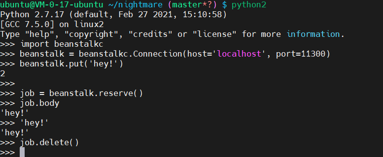
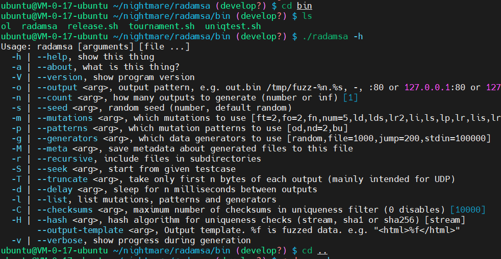
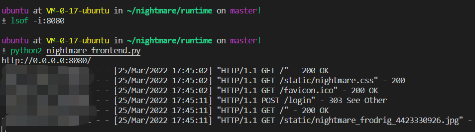
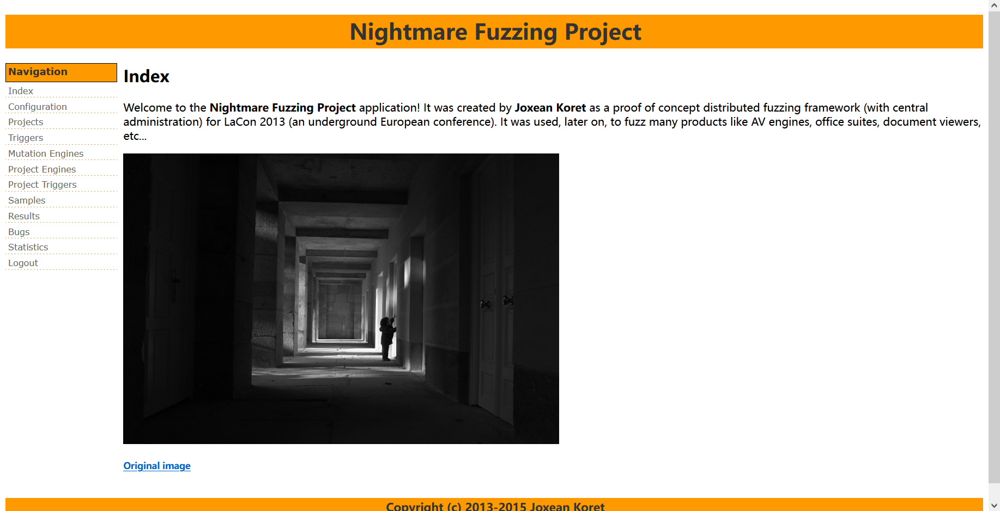

github：https://github.com/joxeankoret/nightmare
doc里的介绍文件是全英文的，我用有道翻译简单整理了一下，上传到博客园了
https://files.cnblogs.com/files/This-is-Y/doc_CN.zip?t=1647955220
最初是在windows上搭建的，但是有个beanstalkd不会用，然后考虑到作者本身就是在linux上使用的，最后还是决定使用linux搭建。
1
下载、构建和安装Capstone。
http://www.capstone-engine.org
安装Capstone的一个快速方法是使用“pip”，如下所示:
sudo pip install capstone
2
使用脚本sql/nightmare在MySQL或SQLite数据库中创建模式。sql或sql / nightmare_sqlite.sql。您需要在CONFIG表中修改SAMPLES_PATH, TEMPLATES_PATH和are_path这些路径。每个配置指令的含义如下:
- TEMPLATES_PATH: 查找样本的基本路径。当执行fuzzing会话时，必须为每个文件格式或目标创建子目录，并且只有子目录必须从web界面中选择。
- SAMPLES_PATH: 存储临时创建的文件和所有结果文件的路径，即概念崩溃证明和diff文件。
- NIGHTMARE_PATH: Nightmare安装的基本路径。
这一步我需要先在ubuntu上安装mysql，参考这篇文章
这里直接使用的apt安装的
sudo apt-get install mysql-server
然后记得修改密码，以及把数据库编码改成utf8
值得注意的是，需要修改sql文件，把里面的latin改成utf8
https://www.cnblogs.com/beenoisy/p/4046074.html
vim打开，命令模式，:%s/latin1/utf8/g
然后再运行sql文件导入到数据库中
mysql -u root -p nightmare</home/ubuntu/nightmare/doc/sql/nightmare.sql
一般来说，在终端里修改配置数据库太麻烦了，这里我选择开放远程连接，在win上用navicat连接它去操作数据库，所以需要在服务器控制台打开修改端口，然后配置文件（/etc/mysql/mysql.conf.d/mysqld.cnf）里修改为
bind-address=0.0.0.0
然后service mysql restart重启数据库，测试连接报错1130，进入mysql，执行
GRANT ALL PRIVILEGES ON . TO ‘root’@’%’ IDENTIFIED BY ‘您的数据库密码’ WITH GRANT OPTION;
然后就可以远程连接了。
之后把config表里的参数改一下
3
安装并配置beanstalkd(可以使用doc/beanstalkd.recommended中的推荐文件)
需要用到beanstalkd，这东西是c/s架构的，服务器上我直接用
sudo apt-get install beanstalkd
然后启动
service beanstalkd start
然后需要安装客户端，他这里需要python支持，用的https://github.com/earl/beanstalkc/ 这里我发现可以用pip安装，但是有个问题是，这个beanstalkc是基于python2的，没有更新到python3。但是nightmare是python3的，我现在不知道会不会有什么问题（绝壁会有）
pip2 install beanstalkc
然后python2，运行这段代码，看看会不会有什么问题
1 | import beanstalkc |

4
安装radamsa(把它放在$PATH的某个地方)。
sudo apt-get install gcc make git wget
git clone https://gitlab.com/akihe/radamsa.git
cd radamsa
make
编译好后，在 radamsa/bin 下生成 radamsa ,尝试 ./radamsa -h

然后要求配置好$PATH，关于这个，有一篇不错的文章https://segmentfault.com/a/1190000038313883
可以先用
export PATH=$PATH:/home/ubuntu/nightmare/radamsa/bin
测试一下
由于我服务器用的zsh，所以改的是zshrc文件，
vim ~/.zshrc
在最后添加
1 | # radamsa of nightmare |
然后source ~/.zshrc ，就可以了。
关于radamsa的使用，找了这些文章https://docmiao.com/community/tutorials/how-to-install-and-use-radamsa-to-fuzz-test-programs-and-network-services-on-ubuntu-18-04
https://blog.51cto.com/u_13280061/3081122
作者在install.txt里还提到可安装以下软件包(可选):
DynamoRhmIO
没折腾明白
Zzuf
sudo apt install zzuf
Python macholib
pip直接安装，python2和python3都成功了
Python OleFileIO_PL(提供)
pip直接安装，python3成功，python2失败
5
进入“$INSTALL_DIR/runtime”目录。复制一份config.cfg.example 和config.py.example文件（备用）然后删掉后缀，得到config.py和config.cfg 两个文件。
config.cfg文件是连接数据库用的信息的文件，这里建议在数据库中新建一个用户，不要用root用户登录。建立用户命令如下
create user fuzzing identified by ‘fuzzing’;
grant all privileges on nightmare.* to fuzzing@’%’ identified by ‘fuzzing’;
flush privileges;
config.py文件保存web管理页面的账号密码设置以及Beanstalk连接的ip以及端口信息，修改成需要的就行了。
执行如下命令。
$ python nightmare_frontend.py

现在就可以输入地址，访问它了
